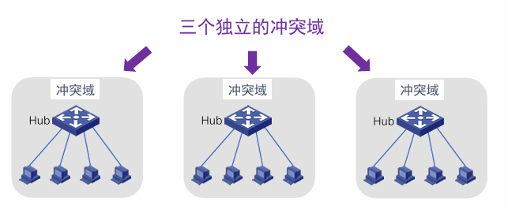

约 5739 个字 35 张图片 预计阅读时间 29 分钟
Chap 4 | 介质访问子层
章节启示录
本章节是计算机网络的第四章。有些内容可能不重要，后续应该会标注。注意，介质访问子层的结构位于数据链路层之下！！！ 这章内容好混乱qwq
1.信道分配问题¶
静态分配的性能分析¶
- 子信道的平均延迟：信道N等分后每个子信道的平均延迟时间： \(T_{FDM}=NT\)
2.多路访问协议¶

2.1 随机访问协议¶
- 特点：冲突不可避免
ALOHA协议¶
-
原理：想发就发
-
定义：帧时：发送一个标准长的帧所需的时间
-
服从泊松分布
- 一个帧时内用户产生新帧：均值 \(N\) 个
- 一个帧时内信道中产生的帧（包括重传）：均值 \(G\) 个
-
分析：
- \(0<N<1\)，轻载N接近0，重载N接近1
- \(G>=N\)，轻载 \(G=N\) （无冲突）， 重载 \(G>N\) （冲突/重传）
-
概率：

-
性能分析：
- 吞吐量 \(S\) ： \(S=1\) 时分组一个接一个地发送出去，帧之间没有空隙。一般用 \(S\) 接近于1的程度来衡量信道的利用率
- 运载负载 \(G\) ,又称网络负载
- \(P_0\) ：是一帧发送成功的概率，就是发送成功的分组再已发送分组的总数中所占的比例： \(S=G * P_0\)
如何计算传输成功的概率 \(P_0\)
- 单向传播延迟Delay: \(D\)
- 冲突危险期：\(2D\)
- 生成帧均值：\(2G\)
- 不遭受冲突的概率 \(P_0 = e^{-2G}\)
P[0] 和 \(P_0\) 完全不同
性能计算？
-
分隙ALOHA工作原理：
- 帧的发送必须在时隙的起点
- 冲突只发生在时隙的起点

性能计算？

CSMA¶
- 特点：“先听后发”
非持续式CSMA
-
特点
- 经侦听，如果介质空闲，开始发送
- 如果介质忙，则等待一个随机分布的时间，然后重复步骤1
-
好处：等待一个随机时间可以减少再次碰撞冲突的可能性
-
缺点：等待时间内介质上如果没有数据传送，这段时间是浪费的
持续式（指1-持续式）CSMA
- 特点
- 经侦听，如介质空闲，则发送
- 如介质忙，持续侦听，一旦空闲立即发送
- 如果发生冲突，等待一个随机分布的时间再重复步骤1
- 好处：持续式的延迟时间要少于非持续式
- 主要问题：如果两个以上的站等待发送，一旦介质空闲就一定会发生冲突
p-持续式CSMA
- 特点
- 经侦听，如介质空闲，那么以 p的概率 发送，以(1–p)的概率延迟一个时间单元发送
- 如介质忙，持续侦听，一旦空闲重复①
- 如果发送已推迟一个时间单元，再重复步骤1
- 注意：1-持续式是p-持续式的特例
先听再发，避免了冲突吗？
CSMA：如侦听到介质上无数据发送才发送，发送后还会发生冲突吗？
- 肯定会！
-
- 同时传送
- 传播延迟时间
两种情形:

- 冲突窗口：即发送站发出帧后能检测到冲突（碰撞）的最长时间。
数值上：等于最远两站传播时间的两倍，即2D（D是单边延迟）
CSMA/CD （1-持续）
- 原理：“先听后发、边发边听”
- 过程
- 经侦听，如介质空闲，则发送。
- 如介质忙，持续侦听，一旦空闲立即发送。
- 如果发生冲突，等待一个随机分布的时间再重复步骤1
边发边听：是否发生了冲突？
- 一旦冲突，发送Jam（强化）信号
- t4时刻：甲检测到冲突，发送Jam
- t3时刻：乙检测到冲突，是否发送？


-
二进制指数后退( Binary exponential backoff )：
- 确定基本退避时间槽，其长度为以太介质上往返传播时间(2𝜏) ，以太网中设为512比特时间
- 定义重传次数k，k ≤10，即 k = min[ 重传次数, 10 ]
- 从整数集合[0,1,…, (2k −1)]中随机地取出一个数，记为r ；
- 重传所需的时延就是 r 倍的时间槽2𝜏；
- 当重传达 16 次仍不能成功时即丢弃该帧，并向高层报告。
-
性能：
传送一帧平均需要P秒，某个站获得信道的概率为A，2𝜏为时间槽。
P=F/B，F为帧长，B为带宽；L为电缆长度，c为信号传播速度；假设每帧e个竞争时间槽。
2.2 受控访问协议¶
-
特点：克服了冲突
位图协议¶
- 竞争期：在自己的时槽内发送竞争比特
- 举手示意
- 资源预留
- 传输期：按序发送
- 明确的使用权，避免了冲突

- 信道利用率分析:
- 假设：有N个用户，需N个时隙，每帧d比特
- 信道利用率：
- 在低负荷条件下：d/(d+N) （N越大，站点越多，利用率越低）
- 在高负荷条件下：d/(d+1)，接近100%
- 缺点：位图协议无法考虑优先级
令牌传递：（不太重要）¶
- 令牌：发送权限
- 令牌的运行：发送工作站去抓取，获得发送权 除了环，令牌也可以运行在其它拓扑上，如令牌总线
- 发送的帧需要目的站或发送站将其从共享信道上去除；防止无限循环
- 缺点：令牌的维护代价
二进制倒计数协议¶
- 站点：编序号，序号长度相同
- 竞争期：有数据发送的站点从高序号到低序号排队，高者得到发送权
-
特点：高序号站点优先
-
信道效率分析
- N个站的二进制编码所需位数是 \(log_2N\) 位
- 信道的利用率为：d/(d+log2N) （低负载时）
- 如果规定每个帧的帧头为发送地址，即竞争的同时也在发送。则效率为100%
2.3 有限竞争协议¶
- 特点：利用上述二者的优势
低负荷时用随机访问（想发就发），高负荷时用受控访问（需要竞争）
自适应树搜索协议¶
- 在一次成功传输后的第一个竞争时隙，所有站点同时竞争。
- 如果只有一个站点申请，则获得信道。
- 否则在下一竞争时隙，有一半站点参与竞争（递归），下一时隙由另一半站点参与竞争
- 即所有站点构成一棵完全二叉树

3.以太网¶
3.1 经典以太网¶
硬件地址又称为物理地址，或 MAC 地址
MAC地址长6字节，一般用由连字符（或冒号）分隔的12个十六进制表示，例如02-60-8c-e4-b1-21。高24位为厂商代码，低24位为厂商自行分配的适配器序列号。
当路由器通过适配器连接到局域网时，适配器上的MAC地址就用来标志路由器的某个接口，路由器若同时连接到两个网络上，则它需要两个适配器和两个MAC地址。
-
经典以太网的物理层：
- 最高速率10Mbps
- 使用曼彻斯特编码
- 使用同轴电缆和中继器连接
-
MAC子层协议：
-
主机运行CSMA/CD协议 使用CSMA/CD的经典以太网检测到冲突后，会立即中止传输，并发出一个短冲突加强信号，在等待一段随机时间后重发。
二进制指数后退( Binary exponential backoff )的CSMA/CD
- 确定基本退避时间槽，其长度为以太介质上往返传播时间(2𝜏) ，以太网中设为512比特时间
- 定义重传次数k，k ≤10，即 k = min[ 重传次数, 10 ]
- 从整数集合[0,1,…, (2k −1)]中随机地取出一个数，记为r；
- 重传所需的时延就是r倍的时间槽2𝜏；
- 当重传达16次仍不能成功时即丢弃该帧，并向高层报告。
-
常用的以太网MAC帧格式有两种标准：
- DIX Ethernet V2 标准（最常用的）
- IEEE 的 802.3 标准
- 数据字段：46 ~ 1500字节
- 最小帧长= 46+18 = 64B
- 最大帧长= 1500+18 = 1518B （MTU：1500B）
- 校验和
- FCS, Frame Check Sequence
- 使用CRC32计算除了校验和以外的其他字段
-
物理地址（实际上讲的是MAC地址）在数据链路层
以太网规定最短有效帧长为64 字节，凡长度小于64 字节的帧都是由于冲突而异常中止的无效帧。
如果发生冲突，就一定是在发送的前64 字节之内。由于一检测到冲突就立即中止发送，这时已经发送出去的数据一定小于64 字节。
3.2 以太网性能¶

传送一帧平均需要P秒，某个站获得信道的概率为A，2𝜏为时间槽。

P=F/B，F为帧长，B为带宽；L为电缆长度，c为信号传播速度；假设每帧e个竞争时间槽
- 增加带宽或距离会降低网络效率。
3.3 交换式以太网：¶
- 集线器（HUB）:用集线器组成更大的局域网都在一个冲突域中
- 交换机（Switch）：检查 MAC 帧的目的地址对收到的帧进行转发，不在一个冲突域中
3.4 以太网的类型¶
-
快速以太网（百兆以太网）：
- 带宽10Mbps -> 100Mbps
- 比特时间100ns -> 10ns
- 保留原来的工作方式（帧格式、接口、过程规则）
-
千兆以太网：
- 100Mbps -> 1000Mbps（1Gbps）
- 保留原来的工作方式（帧格式、接口、过程规则）
- 全双工和半双工两种方式工作。
- 在半双工方式下使用CSMA/CD （为了向后兼容），增加载波扩充和帧突发
- 全双工方式不需要使用CSMA/CD（缺省方式）
-
万兆以太网：
- 1Gbps -> 10Gbps
- 只支持全双工，不再使用CSMA/CD
- 保持兼容性
-
40G-100G以太网"
- 10Gbps -> 40Gbps & 100Gbps
- 只支持全双工
- 保留以太网帧格式和MAC方法
- 保留当前802.3标准的最小帧和最大帧大小
- 联网设备可以通过可插拔模块支持不同的物理层类型
4.数据链路层交换¶
-
问题：如何让三个独立的冲突域实现互联互通？
 -
解决：
- 物理层设备扩充网络

- 数据链路层设备扩充网络

- 物理层设备扩充网络
4.1 数据链路层交换原理¶
- 理想的网桥是透明的：
- 即插即用，无需任何配置
- 网络中的站点无需感知网桥的存在与否
如何让交换机知道A/B/C/D的存在？
从A发送数据帧，集线器会把数据帧发送给所有与之联通的线路，也就是同时发到B和交换机，之后交换机收到了来自于A的帧（目的地是B），因此交换机知道了A的存在（虽然这时候它还不知道B是哪里），未来如果别人要发送给A，则通过端口1进行发送。
从A再次发送数据帧，网桥发现MAC_A已在表中！更新该表项的帧达到时间，重置老化时间。
全部学习后得到以下的这张表：

-
MAC地址表的构建
- 增加表项：帧的源地址对应的项不在表中
- 删除表项：老化时间到期
- 更新表项：帧的源地址在表中，更新时间戳
-
Forwarding（转发）
-
Filtering（过滤）：找到匹配项！入境口=出境口，丢弃！
-
Flooding（泛洪）：找不到匹配表项！从所有端口（除了入境口）发送出去
- 广播帧：目的地址为FF-FF-FF-FF-FF-FF的数据帧
- 未知单播帧：目的地址不在MAC地址转发表中的单播数据帧
4.2 链路层交换机¶
-
交换方式：从带宽的角度
-
对称交换：出和入的带宽相同
例如：交换机上全为1000Mb/s速率端口
-
非对称交换：出和入的带宽不同
例如：交换机上有100Mb/s、1000Mb/s等多种速率端口
-
-
交换方式：从转发时机的角度
- 存储转发模式（Store and Forward）
- 特点：转发前必须接收整个帧、执行CRC校验
- 缺点：延迟大
- 优点：不转发出错帧、支持非对称交换
- 直通模式（Cut-through）
- 特点：一旦接收到帧的目的地址，就开始转发
- 缺点：可能转发错误帧、不支持非对称交换
- 优点：延迟非常小，可以边入边出
- 无碎片模式（Fragment-free）
- 特点：接收到帧的前64字节，即开始转发（小于64字节的帧一定是发生冲突的，即碎片帧）
- 缺点：仍可能转发错误帧，不支持非对称交换
- 优点：过滤了冲突碎片，延迟和转发错帧介于存储转发和直通交换之间
- 存储转发模式（Store and Forward）
4.3 生成树协议（STP）¶
可靠传输：冗余拓扑
付出的代价：导致物理环路
-
物理环路引发的问题：
- 广播风暴
- 重复帧
- MAC地址表不稳定
-
怎么得到一棵无环的生成树呢？
- 参与的交换机（网桥）：收发桥协议数据单元BPDU
- 选举产生根桥、根端口、指定端口，形成生成树
-
桥协议数据单元BPDU包含的四个关键信息
- 根桥ID（Root ID）: 被选为根的桥ID。
桥ID共8字节，由2字节的优先级和6字节的MAC地址组成的。 - 根路径开销（Root Path Cost）: 到根桥的最小路径开销。
- 指定桥ID（Designated Bridge ID）: 生成和转发BPDU的桥ID
- 指定端口ID（Designated Port ID）: 发送BPDU的端口ID。
- 根桥ID（Root ID）: 被选为根的桥ID。
-
生成树的三个选举过程
- 选举根桥(Root Bridge) 。
- 为每个非根桥选出一个根端口（Root Port）。
- 为每个网段确定一个指定端口（Designated Port）。
-
选举根桥
- 同一广播域中的所有交换机均参与选举；
- 桥ID最小的交换机（网桥）成为生成树的根；
- 在给定广播域内只有一个根桥，其它均为非根桥。
- 根桥的所有端口都处在转发状态。
-
为每个非根桥选出一个根端口
- 每个非根桥，通过比较其每个端口到根桥的根路径开销，选出根端口；
- 具有最小根路径开销的端口被选作根端口；
- 如果多个端口的根路径开销相同，则端口ID最小的端口被选作根端口；
- 非根桥只能有一个根端口，根端口处于转发状态。

什么是根路径开销？
- 根桥的根路径开销为0
- 非根桥的根路径开销为到根桥的路径上所有端口（链路）开销之和。
- 端口（链路）开销值由IEEE定义（如下表），也可通过手工配置改变。
- 为每个网段确定一个指定端口
- 对于每一个网段，在所有连接到它的交换机（网桥）端口中进行选择；
- 一个具有最小根路径开销的端口，作为该网段的指定端口；
- 指定端口处于转发状态，负责该网段的数据转发；
- 连接该网段的其他端口，若既不是指定端口，也不是根端口，则阻塞。

一个小判断题
根桥的所有连接端口都是指定端口？对。
-
生成树的某“枝”断掉了，怎么办？当由交换机（网桥）或链路故障导致网络拓扑改变时，重新构造生成树。
-
重新构建生成树太慢了，怎么办？使用快速生成树协议（Rapid Spanning Tree Protocol, RSTP）
-
RSTP的改进（不要求）
“边缘端口”是指那些直接和终端设备相连，不再连接任何交换机的端口。不能阻塞！
4.4 虚拟局域网¶
- 广播域（Broadcasting Domain）
- 广播域是广播帧能够到达的范围；
- 缺省情况下，交换机所有端口同属于一个广播域，无法隔离广播域；
- 广播帧在广播域中传播，占用资源，降低性能，且具有安全隐患

12个冲突域（一个发其他的都能收到的才可以合并为一个冲突域）
VLAN是一个在物理网络上根据用途，工作组、应用等来逻辑划分的局域网络，与用户的物理位置没有关系。
不同VLAN的成员，不能直接进行二层通信。（可以在三层网络层及以上的层次可以通信）

- VLAN类型
- 基于端口的VLAN（最常见）
- 基于MAC地址的VLAN
- 基于协议的VLAN
- 基于子网的VLAN
-
如何区分不同VLAN的数据帧？
- 在数据帧中携带VLAN标记；
- VLAN 标记由交换机添加/剥除，对终端站点透明；
-
帧标记标准：IEEE802.1Q
- 带VLAN标记的帧称为标记帧（Tagged Frame）
- 不携带VLAN标记的普通以太网帧称为无标记帧（Untagged Frame）
VLAN标签的前两个字节总是置0x8100，表示这是一个802.1Q帧。在VLAN标签的后两个字节中，前四位没什么用，后12位是该VLAN的标识符VID，它唯一地标识该802.1Q帧属于哪个VLAN。12位地VID可识别4096个不同地VLAN。 -
端口类型：
- Access链路类型端口：
- 一般用于连接用户设备（无需识别802.1Q帧的设备）；
- 如何采用基于端口的VLAN划分,Access端口只能加入一个VLAN；
- 一旦Access端口加入了特定的VLAN，连接在该端口的设备被视为属于该VLAN。
- Trunk链路类型端口与Trunk链路
- Trunk端口一般用于交换机之间连接；
- 干道链路允许多个VLAN的流量通过。
- Access链路类型端口：
-
VLAN优点
- 有效控制广播域范围
- 增强网络的安全性
- 灵活构建虚拟工作组
- 提高网络的可管理性
5.无线局域网¶
无限局域网指以无线信道作为传输介质的计算机局域网。
5.1 无线局域网组网模式¶
(大概知道原理即可)
-
基础架构模式
- 分布式系统（DS）
- 访问点（AP）
- 站点（STA）
- 基本服务集（BSS）
- 扩展服务集（ESS）
- 站点之间通信通过AP转发
-
自组织模式（Ad hoc）
- 站点（STA）
- 独立基本服务集（IBSS）
- 站点之间直接通信
- 共享同一无线信道
5.2 IEEE 802.11物理层¶
- 频段：2.4GHz、5GHz（ISM频段，无需授权；限制发送功率，例如：≤1瓦）
- 调制技术：DPSK → QPSK → CCK → 64-QAM → 256-QAM → 1024-QAM
- 直接序列扩频（DSSS）→ 正交频分多路复用（OFDM）→正交频分多址（OFDMA）
- 单天线→ 单用户多入多出（SU-MIMO）→ 多用户多入多出（MU-MIMO）
- 目标：提升传输速率、增强可靠性、支持高密度接入
5.3 IEEE 802.11介质访问控制¶
能否直接将CSMA/CD用于无线局域网？
存在以下问题：
- 冲突检测困难
- 在接收端，发送功率和接收功率相差太大
- 站点在发送时关闭接收功能，无法在发送时同时检测冲突
- 在同一BSS中，不是所有站点都能互相感知到对方发送的信号
- 载波侦听失败，但在接收站点处发生冲突
- 被称为隐藏终端问题
- 暴露终端问题，降低网络的吞吐量
-
信号衰落随时间发生变化，使问题变得更加复杂
-
CSMA/CA:先听后发
- 当信道空闲时间大于IFS（帧间隙），立即传输
- 当信道忙时，延迟直到当前传输结束+IFS时间
- 开始随机退后过程
- 从（0，CWindow）中选择一个随机数作为退后计数器（backoff counter）
- 通过侦听确定每个时间槽是否活动
- 如果没有活动，则减少退后时间
- 退后过程中如果信道忙，则挂起退后过程（解决站点之间的公平问题）
- 在当前帧传输结束后恢复退后过程
-
差错检测与确认重传
- 差错检测：32位CRC校验（与以太网相同）
- 采用停等机制：发送数据，等待确认，超时重传（重传定时器）
- 如果达到最大重传限制，该帧被丢弃，并告知上层协议
采用停等机制的原因？为什么不采用流水线机制？
停等协议在卫星通信时非常低效
因为通信距离非常远，延迟大，网络速度高，效率低
但Wifi范围小（局域网），距离短，使用stop-wait效率高。（水管中的水往往能塞满） -
不同帧间隙控制优先级（只需要知道使用不同帧间隙，来实现不同帧的优先级控制）
- SIFS（Short IFS）：最高优先级，用于Ack, CTS, 轮询响应等
- PIFS（PCF IFS）：中等优先级（SIFS+1槽口时间），轮询服务
- DIFS（DCF IFS）：最低优先级（SIFS+2槽口时间），异步数据服务
-
RTS-CTS机制（可选机制） 目的：通过信道预约，避免长帧冲突
- 发送端发送RTS（request to send）
-
接收端回送CTS（clear to send）
-
RTS和CTS中的持续时间（Duration）中指明传输所需时间（数据+控制）
- 其他相关站点能够收到RTS或（和）CTS，维护NAV
-
如何应对无线链路较高的出错率？
- 解决方法：采用较小的帧（将用户数据帧分段的机制对用户透明）
- \(F_i\) 帧中携带 \(F_{i+1}\) 的传输时间
5.4 IEEE 802.11帧格式¶
- 帧控制：具有多种用途（关联请求、响应，探测请求、响应，解除关联，信标帧，认证，解除认证等）
- 持续时间：下一个要发送帧可能持续的时间（NAV）或关联ID（AID）
- 地址1~地址4：每个地址的含义基于“去往DS”和“来自DS”域段确定
- 顺序控制：过滤掉重复帧，或用于分片组合
- QoS控制域段：存放数据流的QoS信息（802.11e中扩展）
- 数据：包含任意长度的数据（0-2312字节）
- CRC校验：802.11采用4个字节的校验码
5.5 无线局域网的构建与管理¶
通过AP接入有线网络（互联网络）
-
关键：如何关联到AP？
- BSSID：AP的MAC地址，标识AP管理的基本服务集
- SSID：32字节网名，标识一个扩展服务集（ESS），包含一个或多个基本服务集
-
关联到AP的三个阶段
- 扫描（Scan）
- 被动扫描：AP周期性发送Beacon帧，站点在每个可用的通道上扫描Beacon帧
- 主动扫描：站点依次在每个可用的通道上发出包含SSID的Probe Request 帧，具有被请求SSID的AP返回Probe Response帧
- 认证（Authentication）：当站点找到与其有相同SSID 的AP，在SSID 匹配的AP 中，根据收到的AP 信号强度，选择一个信号最强的AP，然后进入认证阶段
- 关联（Association）：AP维护站点关联表，并记录站点的能力
- 扫描（Scan）